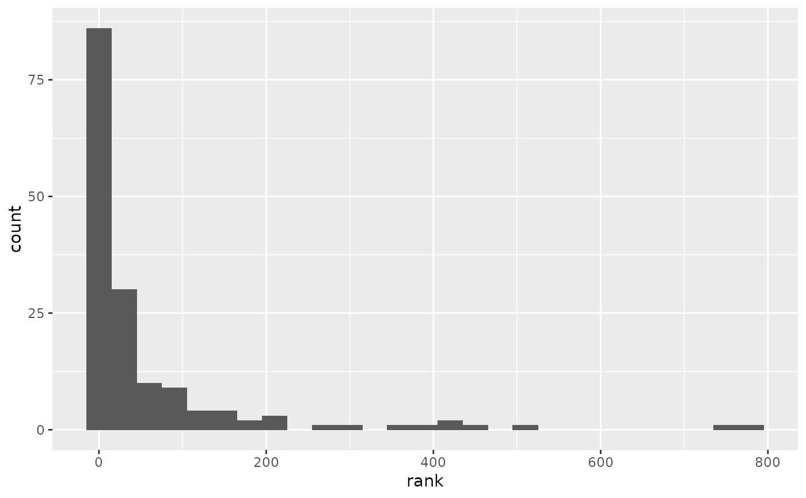

Evaluate next-word predictions based on Stupid Back-off \(latex\)-gram model on a test corpus.
eval_sbo_preds(model, test, L = model$L)
| model | a |
|---|---|
| test | a character vector. Test corpus for model evaluation. |
| L | Maximum number of predictions for each input sentence
(maximum allowed is |
A tibble, containing the input $(N-1)$-grams, the true completions, the predicted completions and a column indicating whether one of the predictions were correct or not.
This function allows to obtain information on Stupid Back-off model predictions, such as next-word prediction accuracy, or the word-rank distribution of correct prediction, by direct test against a test set corpus.
eval_sbo_preds performs the following operations:
Sample a single $N$-gram from each sentence of test corpus.
Predict next words from the $(N-1)$-gram prefix.
Return all predictions, together with the true word completions.
# Evaluating next-word predictions from a Stupid Back-off N-gram model set.seed(840) # Set seed for reproducibility eval <- # May take ~ 2 or 3 minutes! eval_sbo_preds(twitter_sbo, twitter_test, L = 3) ## Compute three-word accuracies eval %>% summarise(accuracy = sum(correct)/n()) # Overall accuracy#> # A tibble: 1 x 1 #> accuracy #> <dbl> #> 1 0.353eval %>% # Accuracy for in-sentence predictions filter(true != ".") %>% summarise(accuracy = sum(correct)/n())#> # A tibble: 1 x 1 #> accuracy #> <dbl> #> 1 0.209## Make histogram of word-rank distribution for correct predictions if(require(ggplot2)){ eval %>% ### filter(correct, true != ".") %>% transmute(rank = match(true, table = twitter_sbo$dict)) %>% ggplot(aes(x = rank)) + geom_histogram(binwidth = 25) }#>